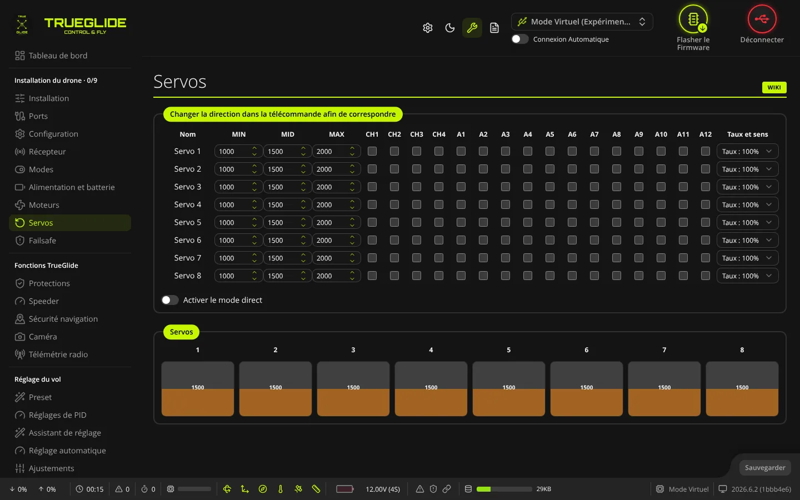
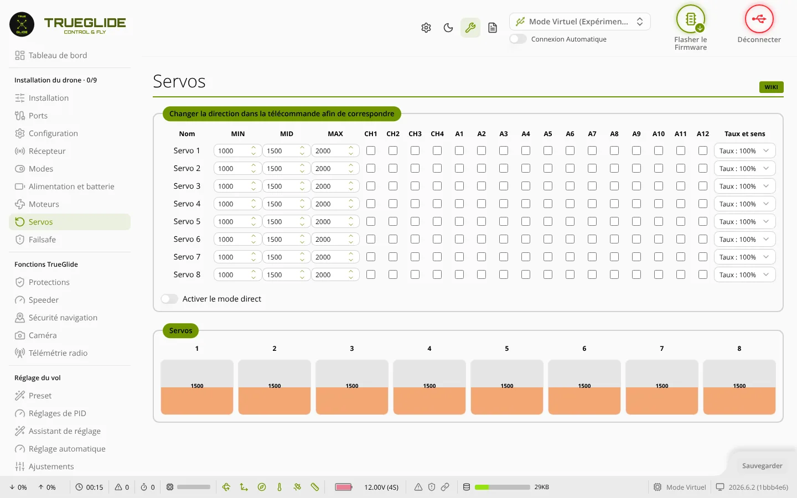

TRUE
TRUEServos
L'onglet Servos (groupe « Installation du drone ») sert à régler la course de chaque servo (minimum, milieu, maximum), son sens, et à lui faire suivre directement une voie de la radio.


Quand l'onglet apparaît
L'onglet n'est dans le menu que si le firmware de la carte contient la gestion des servos (option de compilation USE_SERVOS ou USE_WING). Sur un quad classique, il est souvent absent : c'est normal. Il sert surtout aux tricoptères, ailes, avions et appareils à servos.
Tableau des servos
Le cadre s'appelle « Changer la direction dans la télécommande afin de correspondre ». Il a une ligne par servo (8 au plus).
- Nom : Servo 1 à Servo 8.
- MIN, MID, MAX : bout de course bas, point milieu et bout de course haut du servo, en microsecondes, de 500 à 2500. Valeurs par défaut : 1000, 1500, 2000. Le logiciel ramène toute valeur hors de 500 à 2500 dans ces bornes.
- CH1 à CH4, puis A1, A2… : une case par voie de la radio (le nombre de colonnes suit le nombre de voies actives). Cocher une case fait suivre cette voie au servo, ramenée entre son MIN et son MAX. Une seule case par servo : en cocher une autre remplace la précédente. Sans case cochée, le servo part de son MID.
- Taux et sens : de « Taux : 100% » à « Taux : -100% ». Multiplie le mouvement que le mixage donne au servo (tricoptère, aile…). Une valeur négative inverse le sens. Ce taux ne touche pas une voie suivie par une case cochée : pour inverser celle-ci, inversez la voie dans la radio, comme le dit le titre du cadre.
Activer le mode direct
Avec cet interrupteur, chaque changement du tableau est envoyé tout de suite au contrôleur de vol, pour voir le servo bouger pendant le réglage. Ces changements ne sont pas enregistrés : il faut cliquer sur Sauvegarder pour les garder.
Barres des servos
Le cadre Servos montre une barre par servo (1 à 8) avec la valeur envoyée au servo, lue toutes les 50 ms. La barre est vide à 1000 et pleine à 2000. Sans carte (mode virtuel), elle reste à 1500.
Sauvegarder
Le bouton Sauvegarder s'active dès qu'une valeur du tableau change. Il envoie la configuration des servos et l'enregistre dans la mémoire du contrôleur de vol, sans redémarrage.
Régler un servo pas à pas
- Activez Activer le mode direct.
- Réglez MID pour que la gouverne soit au neutre.
- Bougez le manche concerné. Si la gouverne part dans le mauvais sens, mettez un Taux et sens négatif (par exemple « Taux : -100% »). Pour un servo qui suit une voie cochée, inversez plutôt la voie dans la radio.
- Réglez MIN et MAX pour que le servo ne force pas en bout de course.
- Cliquez sur Sauvegarder.